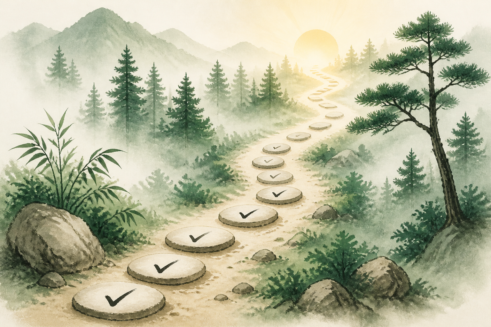

Local only
Your progress
Check off moves and mark days complete on any level page. Everything stays in this browser’s local storage - no account, no server.

0Day streak
0Sessions logged
Not yetTrained today
Local only
Check off moves and mark days complete on any level page. Everything stays in this browser’s local storage - no account, no server.
